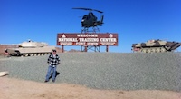
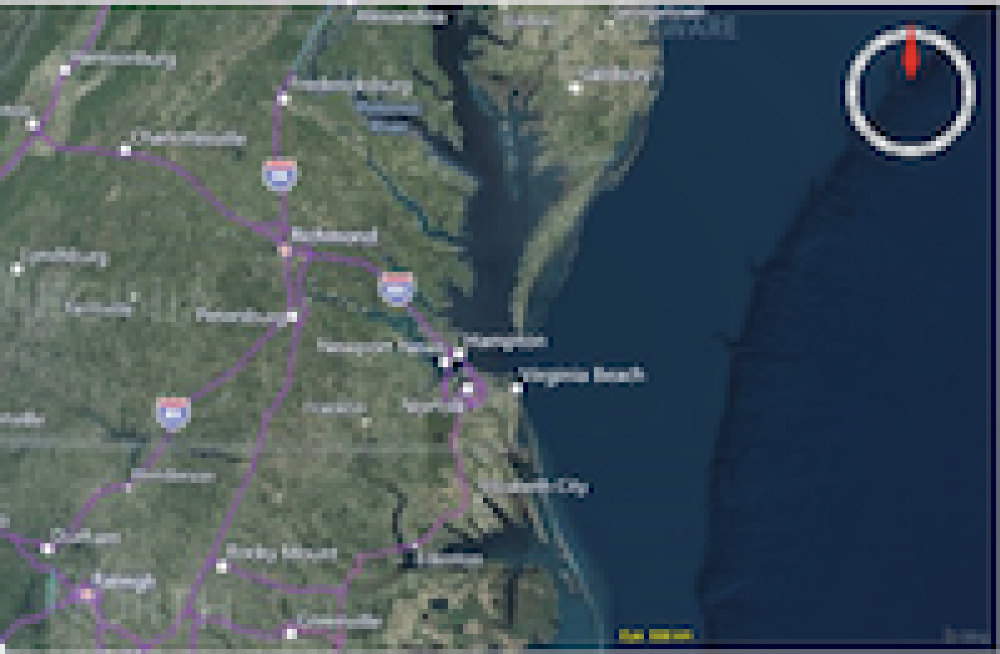
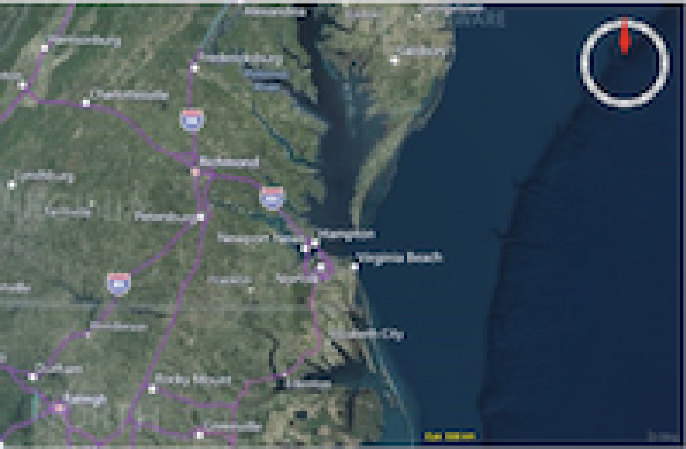

Case Studies
National Training Center
The National Training Center (NTC) is located at Ft. Irwin in California. NTC is the be-all and end-all for training. Here we take a look at how the Force-on-Target training software was developed and how it is used for Battalion-level training.
Coord Grabber
 

CoordGrabber is an AWS SaaS application built for the installation of hardware devices on a training range for the military. It allows personnel to quickly locate the geographic location of where to deploy hardware on the ground. Here we take a look at the technology behind this AWS service.
TRACR Chain

TRACR Chain is an emerging AWS application that is used by the military to view and colocate information about how soldiers, crews, and units train. Here we take a look at the technology behind this AWS service.
KDAS

The Known Distance Automated Scoring (KDAS) solution is a custom built scoring system used by the Marines to qualify with their rifles and machine guns. This training is essential for Marines to see how well they shoot so that they can use their weapons in battle. Here we take a look at how the KDAS training software was developed and how it is used for qualification training.
TRACR
One of the products that is widely used for training in called Targetry Range Automated Control and Recording (TRACR). This product is deployed to hundreds of live-fire ranges throughout the world. Here we take a look at the TRACR product and the side-projects developed for both Army and Marines training.
Kennedy Space Center
The Kennedy Space Center (KSC) is famous for the launching of manned rockets since the Mercury program in the 1961 when Alan Sheparrd was the first American in space. Perhaps, other than the rocket that put a man on the moon, it is most famous for the Space Shuttle. Here we take a look at the software involved with replacing the existing system.
DavidBarrineau.com
This website is a static website that is hosted on AWS. Here we take a look at the technology behind this AWS website.